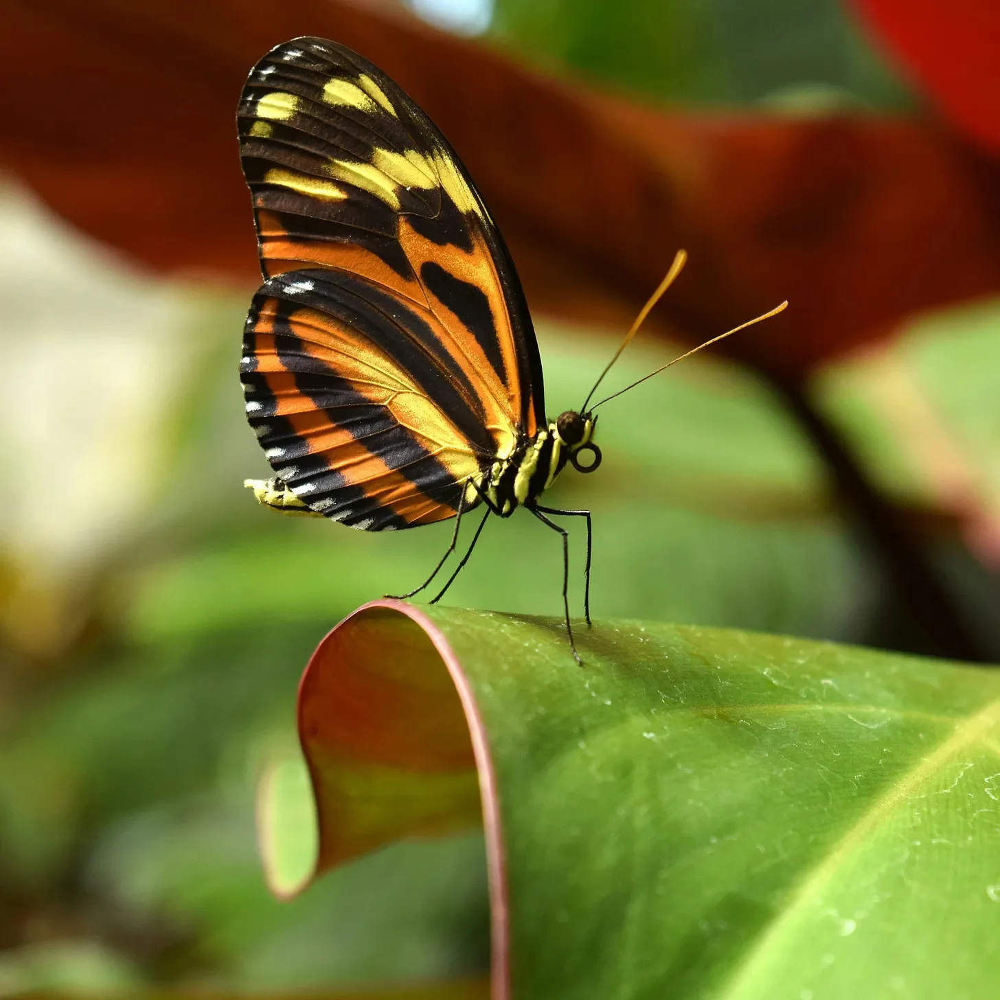

나비는 발로 맛을 본다. [Butterflies taste with their feet.]
인간의 뇌는 두부와 같은 질감을 가지고 있다. [The human brain has the same consistency as tofu.]
북극곰의 털은 사실 투명하고 하얗지 않다. [A polar bear’s fur is actually transparent and not white.]
햇빛이 내 날개 위에 닿으면 기쁨으로 설렌다. 오늘의 색상은 너무나 선명해! 달콤하고 톡 쏘는 향이 발을 간질인다. 노란 꽃송이에 내려앉으며, 다리가 푹 파묻힌다. 이 꽃, 완벽해! 그런데 그림자가 드리워진다. 넓고 푸른 하늘로 날아가야 해. 하지만 괜찮아. 또 다른 꽃이 기다리고 있을 테니까. 발로 맛볼 또 다른 맛있는 비밀이 있을 거야.
[Sunlight on my wings makes me flutter with joy. Today’s colors are so bright! A scent tickles my feet – sweet and tangy. I land, my legs sinking into a burst of yellow. This flower, it’s perfect! Then, a shadow. I must dance away, up into the wide blue. But it’s okay. Another flower is waiting, another delicious secret to find.]

사라는 손에 뇌를 들고 있었다. 생각보다 무거웠고, 젤리처럼 말랑말랑했다. 이 회색빛 덩어리가 톰슨 부인의 재치 있는 미소, 그녀의 미스터리 소설에 대한 사랑, 심지어 정원사에 대한 그녀의 짝사랑까지 만들어 냈다는 게 사라에겐 불가능하게 느껴졌다. 생각 하나하나, 기억 하나하나, 누군가를 ‘그 사람'으로 만들어주는 모든 것이 이 주름지고 평범해 보이는 것 안에 어떻게든 담겨 있다니. 사라는 몸서리를 느꼈다. 경외심과 불안한 놀라움이 뒤섞인 떨림이었다.
[Sarah held the brain in her hands. It was heavier than she expected, squishy like jelly gone wrong. This lump of gray matter was responsible for Mrs. Thompson’s witty smile, her love of mystery novels, even her secret crush on the gardener. It seemed impossible. Every thought, every memory, every part of what made someone them, was somehow contained inside this wrinkly, unassuming thing. Sarah felt a shiver – part awe, part unsettling wonder.]

북극곰 보리스는 낮잠 자는 것을 무엇보다 좋아했다. 사냥? 일이 너무 많아. 놀기? 너무 피곤해. 다른 곰들이 장난치는 동안에 보리스는 완벽한 햇볕이 드는 곳을 찾아 깜박 잠이 들었다. “게으른 곰!” 다른 곰들은 비웃었다. 보리스는 신경 쓰지 않았다. 그러나 어느 날 폭풍이 몰려와 바다를 얼릴 위협이 다가왔다. “보리스, 일어나서 먹이를 찾는 걸 도와줘!” 친구들이 소리쳤다. 보리스는 졸린 몸을 쭉 뻗으며 놀라운 힘이 솟아오르는 것을 느꼈다. 그의 강력한 발로 다른 곰들이 깰 수 없는 얼음을 부수자, 잔치 거리가 나타났다. 결국 낮잠 덕분에 보리스는 가장 강한 곰이 되었다!
[Boris the polar bear loved nothing more than to take a nap. Hunting? Too much work. Playing? Too tired. While the other bears frolicked, Boris found the perfect sunny spot and drifted off to sleep. “Lazy bear!” the others scoffed. Boris didn’t care, but one day a storm rolled in and threatened to freeze the ocean. “Boris, wake up and help us find food!” his friends shouted. Boris stretched sleepily and felt an incredible surge of strength. With his powerful paws, he broke the ice that the other bears couldn’t break, and a feast appeared. In the end, thanks to his nap, Boris had become the strongest bear ever!]